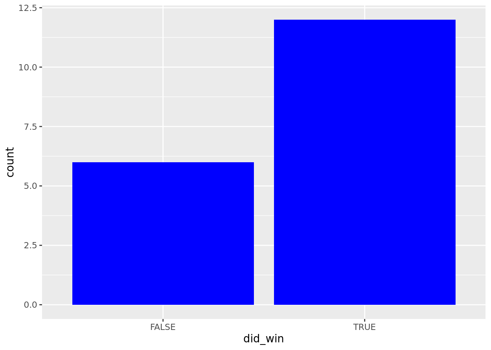
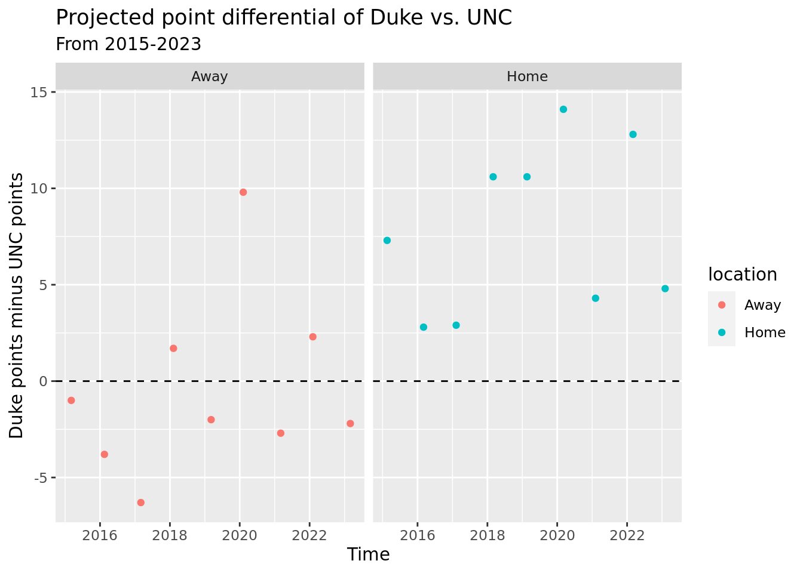
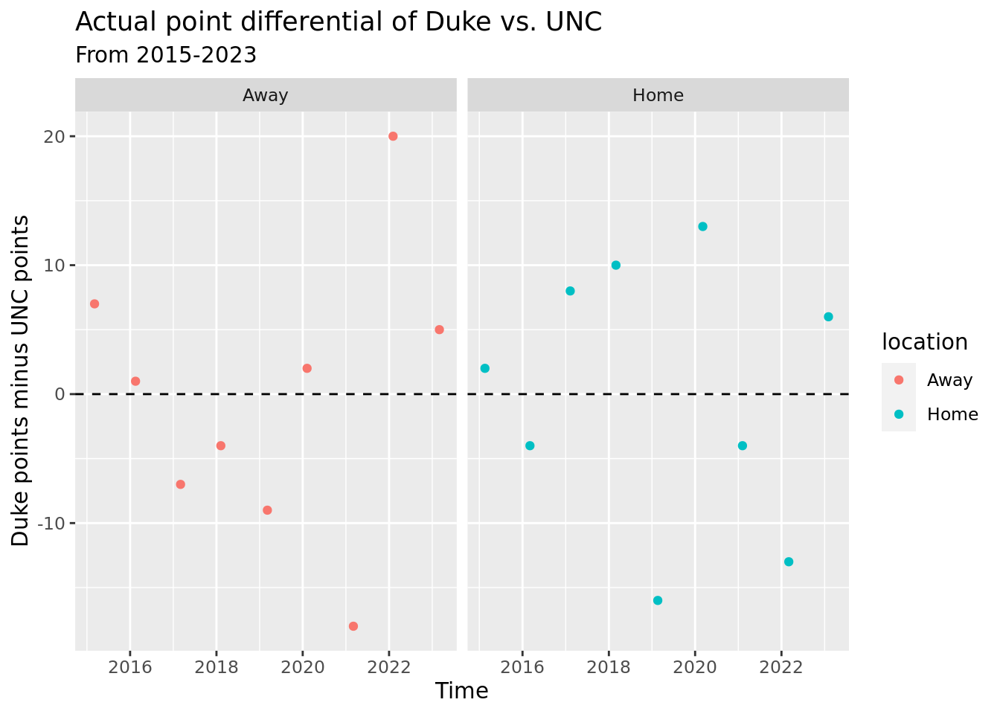
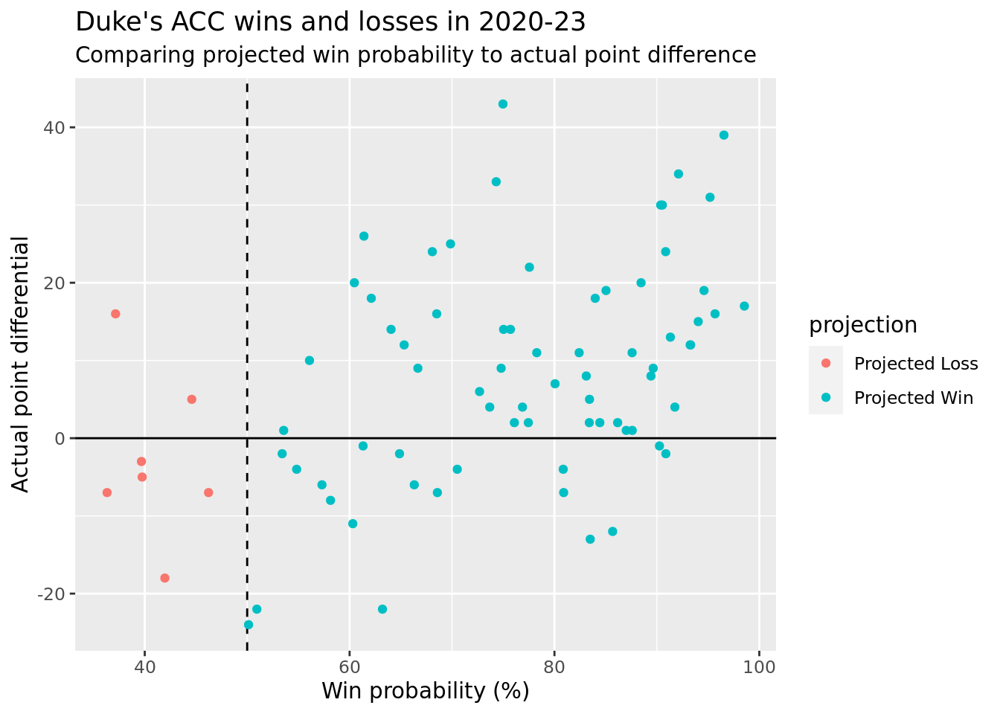
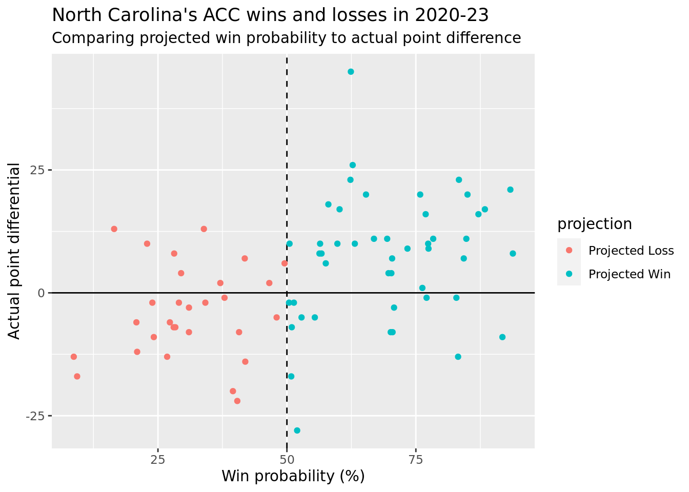
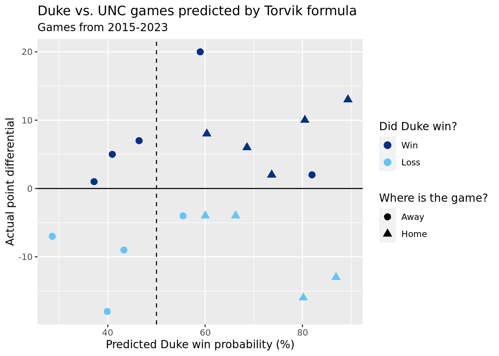
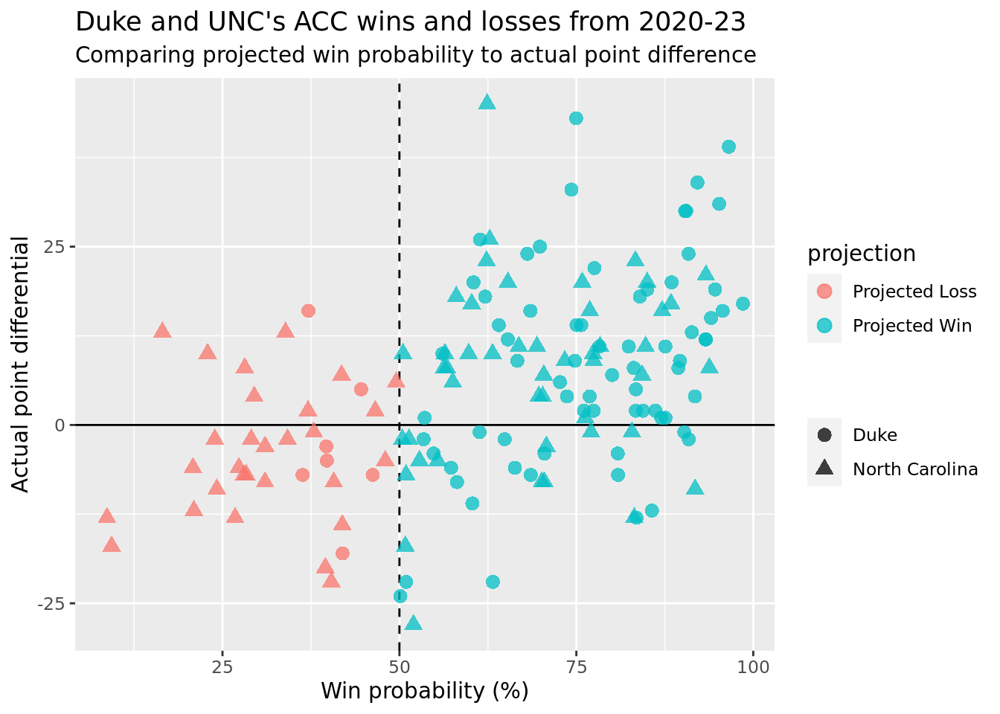

# persistent log-in
cbbdata::cbd_login()API Key set!library(cbbdata)
library(tidyverse)
library(tidymodels)
library(caret)# persistent log-in
cbbdata::cbd_login()API Key set!library(cbbdata)
library(tidyverse)
library(tidymodels)
library(caret)duke_data <- cbd_torvik_game_factors() %>%
filter(team == 'Duke')duke_unc_game <- cbd_torvik_season_prediction('Duke',2024) %>%
filter(opp == 'North Carolina', game_location == 'A')
duke_unc_game date team opp game_location tempo ppp pts win_per
1 2024-02-03 Duke North Carolina A 71.05691 1.037392 73.7 22.89543
did_win simulate_date year
1 FALSE 2024-02-03 2024unc_duke_game <- cbd_torvik_season_prediction('North Carolina',2024) %>%
filter(opp == 'Duke', game_location == 'H')
unc_duke_game date team opp game_location tempo ppp pts win_per
1 2024-02-03 North Carolina Duke H 71.05691 1.152916 81.9 77.10457
did_win simulate_date year
1 TRUE 2024-02-03 2024#result <- rbinom(100, 1, 0.2346)
#hist(result) home_games <- list("20150218","20160305","20170209","20180303","20190220","20200307","20210206","20220305","20230204")
away_games <- list("20150307","20160217","20170304","20180208","20190309","20200208","20210306","20220205","20230304")
home_predictions <- cbd_torvik_game_prediction('Duke','North Carolina', "20150218")
for (x in home_games){
this_pred = cbd_torvik_game_prediction('Duke','North Carolina', x)
home_predictions = full_join(home_predictions, this_pred)
}Joining with `by = join_by(team, date, location, tempo, ppp, pts, win_per,
did_win)`
Joining with `by = join_by(team, date, location, tempo, ppp, pts, win_per,
did_win)`
Joining with `by = join_by(team, date, location, tempo, ppp, pts, win_per,
did_win)`
Joining with `by = join_by(team, date, location, tempo, ppp, pts, win_per,
did_win)`
Joining with `by = join_by(team, date, location, tempo, ppp, pts, win_per,
did_win)`
Joining with `by = join_by(team, date, location, tempo, ppp, pts, win_per,
did_win)`
Joining with `by = join_by(team, date, location, tempo, ppp, pts, win_per,
did_win)`
Joining with `by = join_by(team, date, location, tempo, ppp, pts, win_per,
did_win)`
Joining with `by = join_by(team, date, location, tempo, ppp, pts, win_per,
did_win)`away_predictions <- cbd_torvik_game_prediction('North Carolina', 'Duke', "20150307")
for (x in away_games){
this_pred = cbd_torvik_game_prediction('North Carolina','Duke', x)
away_predictions = full_join(away_predictions, this_pred)
}Joining with `by = join_by(team, date, location, tempo, ppp, pts, win_per,
did_win)`
Joining with `by = join_by(team, date, location, tempo, ppp, pts, win_per,
did_win)`
Joining with `by = join_by(team, date, location, tempo, ppp, pts, win_per,
did_win)`
Joining with `by = join_by(team, date, location, tempo, ppp, pts, win_per,
did_win)`
Joining with `by = join_by(team, date, location, tempo, ppp, pts, win_per,
did_win)`
Joining with `by = join_by(team, date, location, tempo, ppp, pts, win_per,
did_win)`
Joining with `by = join_by(team, date, location, tempo, ppp, pts, win_per,
did_win)`
Joining with `by = join_by(team, date, location, tempo, ppp, pts, win_per,
did_win)`
Joining with `by = join_by(team, date, location, tempo, ppp, pts, win_per,
did_win)`full_predictions <- full_join(home_predictions, away_predictions)Joining with `by = join_by(team, date, location, tempo, ppp, pts, win_per,
did_win)`full_predictions %>%
filter(team == 'Duke') %>%
ggplot(aes(x = did_win)) +
geom_histogram(stat = "count", fill = "Blue")Warning in geom_histogram(stat = "count", fill = "Blue"): Ignoring unknown
parameters: `binwidth`, `bins`, and `pad`
date <- c("02/17/2015","03/06/2015","02/16/2016","03/04/2016","02/08/2017","03/03/2017","02/07/2018","03/02/2018","02/19/2019","03/08/2019","02/07/2020","03/06/2020","02/05/2021","03/05/2021","02/04/2022","03/04/2022","02/03/2023","03/03/2023")
date <- as.Date(date, format = "%m/%d/%Y")
winner <- c("Duke","Duke","Duke","North Carolina","Duke","North Carolina","North Carolina","Duke","North Carolina","North Carolina","Duke","Duke","North Carolina","North Carolina","Duke","North Carolina","Duke","Duke")
diff <- c(2,7,1,-4,8,-7,-4,10,-16,-9,2,13,-4,-18,20,-13,6,5)
duke_home <- c("Home","Away","Away","Home","Home","Away","Away","Home","Home","Away","Away","Home","Home","Away","Away","Home","Home","Away")
real_results <- data.frame(date,winner,diff,duke_home)full_predictions <- full_predictions %>%
mutate(duke_home = case_when(team == "Duke" & location == "H" ~ "Home",
team == "North Carolina" & location == "A" ~ "Home",
TRUE ~ "Away"),
duke_pts = if_else(team == "Duke", pts, 0),
unc_pts = if_else(team == "North Carolina",pts,0))
full_predictions <- full_predictions %>%
group_by(date) %>%
mutate(diff = max(duke_pts) - max(unc_pts))
full_predictions %>%
filter(team == "Duke") %>%
ggplot(aes(x = date, y = diff, color = duke_home)) +
geom_point() +
geom_hline(yintercept = 0, linetype = 2) +
facet_wrap(~ duke_home) +
labs(title = "Projected point differential of Duke vs. UNC",
subtitle = "From 2015-2023",
y = "Duke points minus UNC points",
x = "Time",
color = "location")
real_results %>%
ggplot(aes(x = date, y = diff, color = duke_home)) +
geom_point() +
geom_hline(yintercept = 0, linetype = 2) +
facet_wrap(~ duke_home) +
labs(title = "Actual point differential of Duke vs. UNC",
subtitle = "From 2015-2023",
y = "Duke points minus UNC points",
x = "Time",
color = "location")
acc_2023 <- full_join(cbd_torvik_season_prediction("Duke", 2023,"20230101"),duke_data, by = join_by(date)) %>%
select(-location, -avg_marg) %>%
filter(! is.na(pts_scored), opp_conf == "ACC", !is.na(team.x))
acc_2022 <- full_join(cbd_torvik_season_prediction("Duke", 2022,"20220101"),duke_data, by = join_by(date)) %>%
select(-location, -avg_marg) %>%
filter(! is.na(pts_scored), opp_conf == "ACC", !is.na(team.x))
test <- full_join(acc_2023,acc_2022)Joining with `by = join_by(date, team.x, opp.x, game_location, tempo.x, ppp,
pts, win_per, did_win, simulate_date, year.x, type, team.y, conf, opp.y,
opp_conf, loc, result, pts_scored, pts_allowed, adj_o, adj_d, off_ppp, off_efg,
off_to, off_or, off_ftr, def_ppp, def_efg, def_to, def_or, def_ftr, game_score,
season, tempo.y, game_id, coach, opp_coach, year.y)`acc_2021 <- full_join(cbd_torvik_season_prediction("Duke", 2021,"20210101"),duke_data, by = join_by(date)) %>%
select(-location, -avg_marg) %>%
filter(! is.na(pts_scored), opp_conf == "ACC", !is.na(team.x))
test <- full_join(test,acc_2021)Joining with `by = join_by(date, team.x, opp.x, game_location, tempo.x, ppp,
pts, win_per, did_win, simulate_date, year.x, type, team.y, conf, opp.y,
opp_conf, loc, result, pts_scored, pts_allowed, adj_o, adj_d, off_ppp, off_efg,
off_to, off_or, off_ftr, def_ppp, def_efg, def_to, def_or, def_ftr, game_score,
season, tempo.y, game_id, coach, opp_coach, year.y)`acc_2020 <- full_join(cbd_torvik_season_prediction("Duke", 2020,"20200101"),duke_data, by = join_by(date)) %>%
select(-location, -avg_marg) %>%
filter(! is.na(pts_scored), opp_conf == "ACC", !is.na(team.x))
test <- full_join(test,acc_2020)Joining with `by = join_by(date, team.x, opp.x, game_location, tempo.x, ppp,
pts, win_per, did_win, simulate_date, year.x, type, team.y, conf, opp.y,
opp_conf, loc, result, pts_scored, pts_allowed, adj_o, adj_d, off_ppp, off_efg,
off_to, off_or, off_ftr, def_ppp, def_efg, def_to, def_or, def_ftr, game_score,
season, tempo.y, game_id, coach, opp_coach, year.y)`test <- test %>%
mutate(diff = pts_scored - pts_allowed,
projection = case_when(win_per > 50 ~ "Projected Win",
win_per <50 ~ "Projected Loss",
TRUE ~ "Too close to call")) %>%
filter(!is.na(win_per))
test %>%
ggplot(aes(x = win_per, y = diff, color = projection)) +
geom_hline(yintercept = 0, linetype = 1) +
geom_vline(xintercept = 50, linetype = 2) +
geom_point() +
#geom_rect(xmin = 45, xmax = 55, ymin = -1000, ymax = 1000, alpha = 0, color = "White",linetype = 2, size = 1.5) +
labs(title = "Duke's ACC wins and losses in 2020-23",
subtitle = "Comparing projected win probability to actual point difference",
x = "Win probability (%)",
y = "Actual point differential")
unc_data <- cbd_torvik_game_factors() %>%
filter(team == 'North Carolina')
acc_2023_unc <- full_join(cbd_torvik_season_prediction("North Carolina", 2023, date = "20230101"),unc_data, by = join_by(date)) %>%
select(-location, -avg_marg) %>%
filter(! is.na(pts_scored), opp_conf == "ACC", !is.na(team.x))
acc_2022_unc <- full_join(cbd_torvik_season_prediction("North Carolina", 2022, "20220101"),unc_data, by = join_by(date)) %>%
select(-location, -avg_marg) %>%
filter(! is.na(pts_scored), opp_conf == "ACC", !is.na(team.x))
test_unc <- full_join(acc_2023_unc,acc_2022_unc)Joining with `by = join_by(date, team.x, opp.x, game_location, tempo.x, ppp,
pts, win_per, did_win, simulate_date, year.x, type, team.y, conf, opp.y,
opp_conf, loc, result, pts_scored, pts_allowed, adj_o, adj_d, off_ppp, off_efg,
off_to, off_or, off_ftr, def_ppp, def_efg, def_to, def_or, def_ftr, game_score,
season, tempo.y, game_id, coach, opp_coach, year.y)`acc_2021_unc <- full_join(cbd_torvik_season_prediction("North Carolina", 2021, "20210101"),unc_data, by = join_by(date)) %>%
select(-location, -avg_marg) %>%
filter(! is.na(pts_scored), opp_conf == "ACC", !is.na(team.x))
test_unc <- full_join(test_unc,acc_2021_unc)Joining with `by = join_by(date, team.x, opp.x, game_location, tempo.x, ppp,
pts, win_per, did_win, simulate_date, year.x, type, team.y, conf, opp.y,
opp_conf, loc, result, pts_scored, pts_allowed, adj_o, adj_d, off_ppp, off_efg,
off_to, off_or, off_ftr, def_ppp, def_efg, def_to, def_or, def_ftr, game_score,
season, tempo.y, game_id, coach, opp_coach, year.y)`acc_2020_unc <- full_join(cbd_torvik_season_prediction("North Carolina", 2020, "20200101"),unc_data, by = join_by(date)) %>%
select(-location, -avg_marg) %>%
filter(! is.na(pts_scored), opp_conf == "ACC", !is.na(team.x))
test_unc <- full_join(test_unc,acc_2020_unc)Joining with `by = join_by(date, team.x, opp.x, game_location, tempo.x, ppp,
pts, win_per, did_win, simulate_date, year.x, type, team.y, conf, opp.y,
opp_conf, loc, result, pts_scored, pts_allowed, adj_o, adj_d, off_ppp, off_efg,
off_to, off_or, off_ftr, def_ppp, def_efg, def_to, def_or, def_ftr, game_score,
season, tempo.y, game_id, coach, opp_coach, year.y)`test_unc <- test_unc %>%
mutate(diff = pts_scored - pts_allowed,
projection = case_when(win_per > 50 ~ "Projected Win",
win_per <50 ~ "Projected Loss",
TRUE ~ "Too close to call")) %>%
filter(!is.na(win_per), team.x == "North Carolina")
test_unc %>%
ggplot(aes(x = win_per, y = diff, color = projection)) +
#facet_wrap(~year.y) +
geom_hline(yintercept = 0, linetype = 1) +
geom_vline(xintercept = 50, linetype = 2) +
geom_point() +
#geom_rect(xmin = 45, xmax = 55, ymin = -1000, ymax = 1000, alpha = 0, color = "White",linetype = 2, size = 1.5) +
labs(title = "North Carolina's ACC wins and losses in 2020-23",
subtitle = "Comparing projected win probability to actual point difference",
x = "Win probability (%)",
y = "Actual point differential")
#library(caret)
conf_mat_data <- test %>%
#filter(projection != "Too close to call") %>%
mutate(projection_bin = fct_relevel(as.factor(if_else(projection == "Projected Win", 1, 0)), "1"),
result_bin = fct_relevel(as.factor(if_else(result == "W", 1, 0))),"1")
conf_matrix <- confusionMatrix(data=conf_mat_data$projection_bin, reference = conf_mat_data$result_bin, positive = "1")Warning in confusionMatrix.default(data = conf_mat_data$projection_bin, :
Levels are not in the same order for reference and data. Refactoring data to
match.conf_matrixConfusion Matrix and Statistics
Reference
Prediction 0 1
0 5 2
1 19 52
Accuracy : 0.7308
95% CI : (0.6184, 0.825)
No Information Rate : 0.6923
P-Value [Acc > NIR] : 0.2732702
Kappa : 0.2133
Mcnemar's Test P-Value : 0.0004803
Sensitivity : 0.9630
Specificity : 0.2083
Pos Pred Value : 0.7324
Neg Pred Value : 0.7143
Prevalence : 0.6923
Detection Rate : 0.6667
Detection Prevalence : 0.9103
Balanced Accuracy : 0.5856
'Positive' Class : 1
conf_mat_data_unc <- test_unc %>%
filter(projection != "Too close to call") %>%
mutate(projection_bin = fct_relevel(as.factor(if_else(projection == "Projected Win", 1, 0)), "1"),
result_bin = fct_relevel(as.factor(if_else(result == "W", 1, 0))),"1")
conf_matrix_unc <- confusionMatrix(data=conf_mat_data_unc$projection_bin, reference = conf_mat_data_unc$result_bin, positive = "1")Warning in confusionMatrix.default(data = conf_mat_data_unc$projection_bin, :
Levels are not in the same order for reference and data. Refactoring data to
match.conf_matrix_uncConfusion Matrix and Statistics
Reference
Prediction 0 1
0 20 9
1 14 33
Accuracy : 0.6974
95% CI : (0.5813, 0.7975)
No Information Rate : 0.5526
P-Value [Acc > NIR] : 0.007009
Kappa : 0.3793
Mcnemar's Test P-Value : 0.404248
Sensitivity : 0.7857
Specificity : 0.5882
Pos Pred Value : 0.7021
Neg Pred Value : 0.6897
Prevalence : 0.5526
Detection Rate : 0.4342
Detection Prevalence : 0.6184
Balanced Accuracy : 0.6870
'Positive' Class : 1
real_results <- real_results %>%
mutate(bin_win = as.factor(if_else(diff > 0, 1,0)))
full_predictions <- full_predictions %>%
mutate(bin_win = as.factor(if_else(diff > 0, 1,0)))
filtered_predictions <- full_predictions %>%
filter(team == "Duke")
confusionMatrix(data=filtered_predictions$bin_win, reference = real_results$bin_win, positive = "1")Warning in confusionMatrix.default(data = filtered_predictions$bin_win, :
Levels are not in the same order for reference and data. Refactoring data to
match.Confusion Matrix and Statistics
Reference
Prediction 0 1
0 3 3
1 5 7
Accuracy : 0.5556
95% CI : (0.3076, 0.7847)
No Information Rate : 0.5556
P-Value [Acc > NIR] : 0.5966
Kappa : 0.0769
Mcnemar's Test P-Value : 0.7237
Sensitivity : 0.7000
Specificity : 0.3750
Pos Pred Value : 0.5833
Neg Pred Value : 0.5000
Prevalence : 0.5556
Detection Rate : 0.3889
Detection Prevalence : 0.6667
Balanced Accuracy : 0.5375
'Positive' Class : 1
joined_pred_real <- full_join(real_results,full_predictions, by = join_by(date))
joined_pred_real %>%
mutate(win_cat = fct_relevel(if_else(bin_win.x == 1, "Win", "Loss"),"Win")) %>%
filter(team == "Duke") %>%
ggplot(aes(x=win_per,y=diff.x,color = win_cat, shape = duke_home.x)) +
#facet_wrap(~ duke_home.x) +
geom_point(size = 3) +
scale_color_manual(values = c("#003087","#62C6F2")) +
geom_hline(yintercept = 0, linetype = 1) +
geom_vline(xintercept = 50, linetype = 2) +
labs(title = "Duke vs. UNC games predicted by Torvik formula",
subtitle = "Games from 2015-2023",
x = "Predicted Duke win probability (%)",
y = "Actual point differential",
color = "Did Duke win?",
shape = "Where is the game?")
acc_teams_1 <- c("Virginia","Virginia Tech","Wake Forest",
"Boston College","Syracuse","Florida St.", "Miami FL")
acc_teams_2 <- c("Notre Dame","Georgia Tech",
"North Carolina", "Pittsburgh",
"North Carolina St.","Clemson","Louisville")
my_years <- c(2016,2017,2018,2019,2020,2021,2022,2023)
#cbd_torvik_season_prediction(team = "Georgia Tech", year = 2023)
acc_dat <- cbd_torvik_season_prediction(team = "North Carolina", year = 2023) %>%
filter(opp == "Duke")
#for (x in acc_teams_1){
# this_dat = cbd_torvik_season_prediction(team = x, year = 2018) %>%
# filter(opp == "Duke")
# acc_dat <- full_join(acc_dat,this_dat)
#}both_teams <- full_join(test,test_unc)Joining with `by = join_by(date, team.x, opp.x, game_location, tempo.x, ppp,
pts, win_per, did_win, simulate_date, year.x, type, team.y, conf, opp.y,
opp_conf, loc, result, pts_scored, pts_allowed, adj_o, adj_d, off_ppp, off_efg,
off_to, off_or, off_ftr, def_ppp, def_efg, def_to, def_or, def_ftr, game_score,
season, tempo.y, game_id, coach, opp_coach, year.y, diff, projection)`both_teams %>%
ggplot(aes(x = win_per, y = diff, color = projection, shape = team.x)) +
#facet_wrap(~year.y) +
geom_hline(yintercept = 0, linetype = 1) +
geom_vline(xintercept = 50, linetype = 2) +
geom_point(size = 3, alpha = 0.75) +
#geom_rect(xmin = 45, xmax = 55, ymin = -1000, ymax = 1000, alpha = 0, color = "White",linetype = 2, size = 1.5) +
labs(title = "Duke and UNC's ACC wins and losses from 2020-23",
subtitle = "Comparing projected win probability to actual point difference",
shape = "",
x = "Win probability (%)",
y = "Actual point differential")
conf_mat_data_combo <- both_teams %>%
filter(projection != "Too close to call") %>%
mutate(projection_bin = fct_relevel(as.factor(if_else(projection == "Projected Win", 1, 0)), "1"),
result_bin = fct_relevel(as.factor(if_else(result == "W", 1, 0))),"1")
conf_matrix_combo <- confusionMatrix(data=conf_mat_data_combo$projection_bin, reference = conf_mat_data_combo$result_bin, positive = "1")Warning in confusionMatrix.default(data = conf_mat_data_combo$projection_bin, :
Levels are not in the same order for reference and data. Refactoring data to
match.conf_matrix_comboConfusion Matrix and Statistics
Reference
Prediction 0 1
0 25 11
1 33 85
Accuracy : 0.7143
95% CI : (0.636, 0.7841)
No Information Rate : 0.6234
P-Value [Acc > NIR] : 0.011316
Kappa : 0.3421
Mcnemar's Test P-Value : 0.001546
Sensitivity : 0.8854
Specificity : 0.4310
Pos Pred Value : 0.7203
Neg Pred Value : 0.6944
Prevalence : 0.6234
Detection Rate : 0.5519
Detection Prevalence : 0.7662
Balanced Accuracy : 0.6582
'Positive' Class : 1